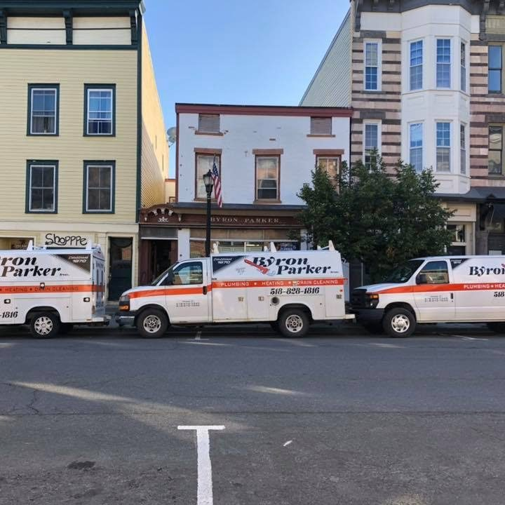
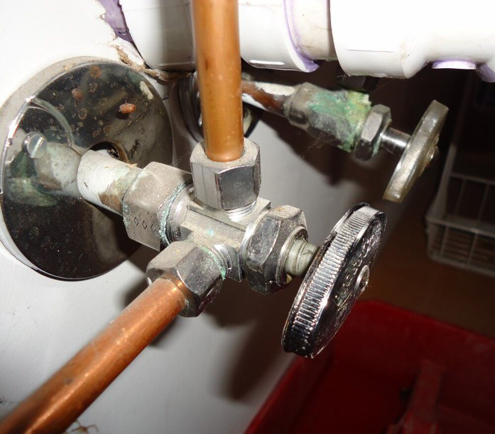
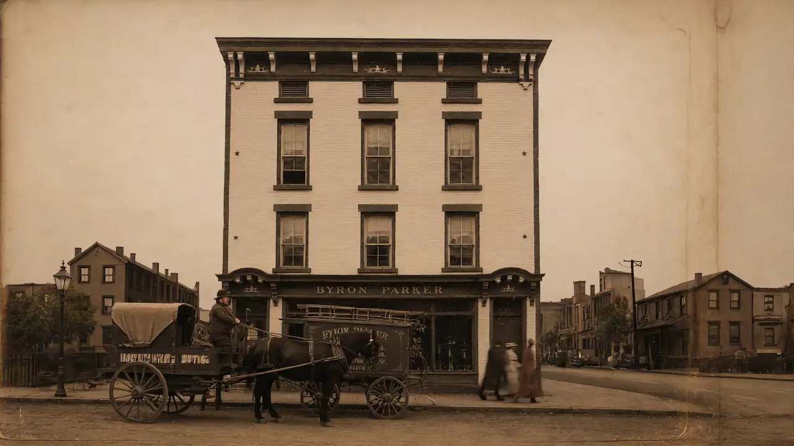
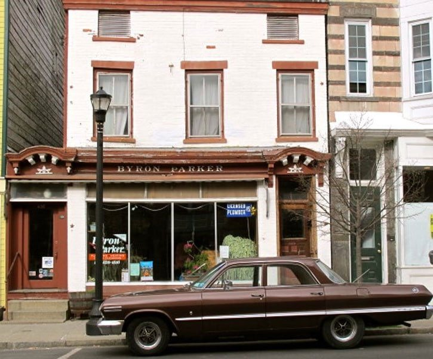
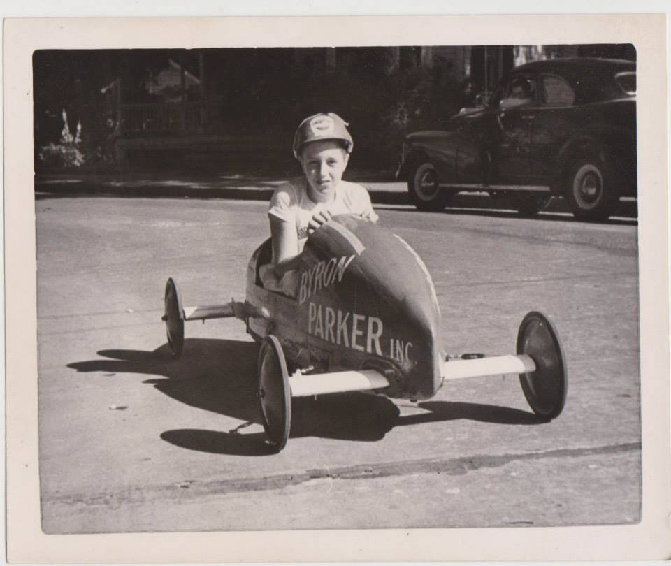
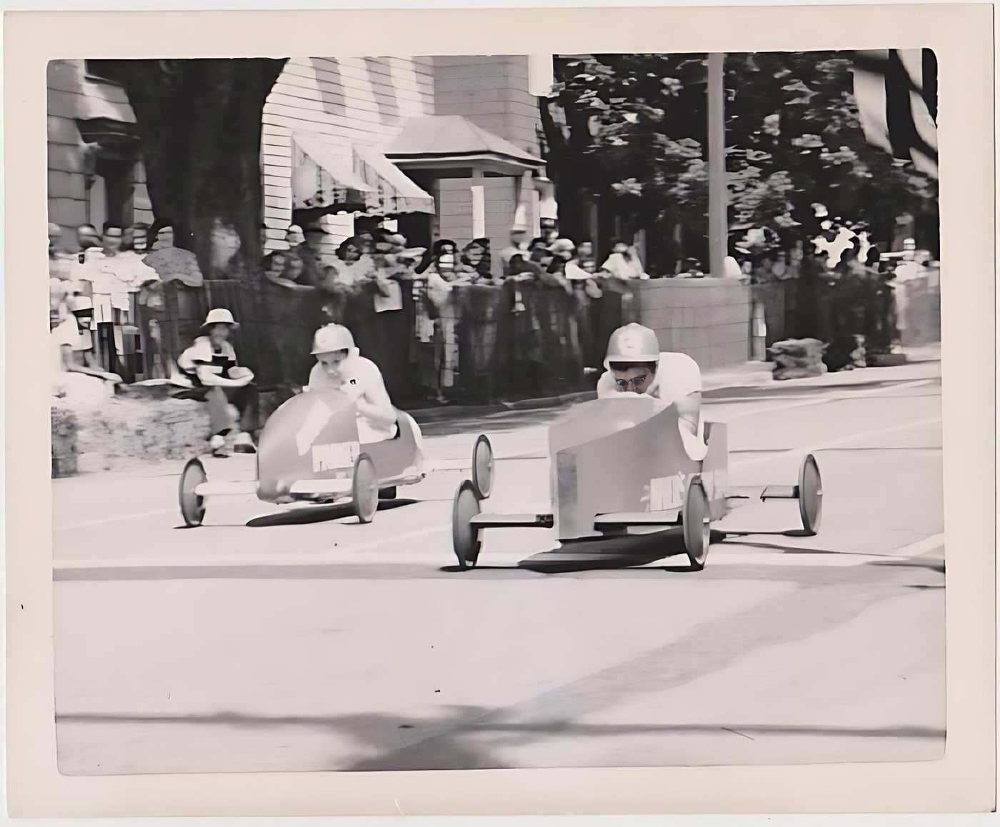
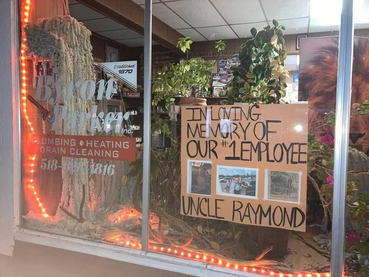

Plumbing repairs
Leaks, drips, bad valves, worn-out faucets and fixtures. The everyday problems that can’t wait.
Plumbing · Heating · Drain Cleaning · Hudson, NY
Repairs, drain cleaning, water heaters, sump pumps and heating, from the same shop at 436 Warren Street. Serving all of Columbia County and parts of Greene.
Office hours Mon–Fri, 8am–4pm

Illustrated Hudson, N.Y. (1905), via The Gossips of Rivertown: “established for thirty-five years” at No. 436 Warren Street.
Services
All plumbing repairs and new installs, handled from the shop on Warren Street.
Leaks, drips, bad valves, worn-out faucets and fixtures. The everyday problems that can’t wait.
Clogged drains and drain lines, snaked out and flowing again.
Replacement water heaters are kept in stock for installation, so no hot water doesn’t mean waiting on parts.
Sump pumps in stock and installed to help keep basements dry.
Heating service and boiler installation for homes around the county.
New plumbing installs as well as repairs. Tell us about the project and ask for a free estimate.
Not sure what you need? Describe it on the phone and we’ll tell you.
Call (518) 828-1816How a service call works
Call (518) 828-1816 and tell us what’s going on. Outside office hours, leave a message with your name, number and the problem.
A Byron Parker van heads out from 436 Warren Street to you.
We track down the problem and fix it: the repair, the new water heater, the cleared drain.
We pack up, clean up the work area and go over what was done before we leave.


Service area
We work out of Hudson and serve every town in Columbia County, plus parts of Greene County across the river. Not sure if you’re in range? Call and ask.
Call (518) 828-1816Parts of Greene County (Catskill, Athens, Coxsackie area): call to confirm.

Byron Parker, plumber, gas and steam fitter, sets up shop in Hudson. By 1905 he is at No. 436 Warren Street.
A neighbor’s recollection, shared on The Gossips of Rivertown, says the building once had a fire on its top floor.
The business carried on. By that account, the burned top section was taken down, which is why the façade is shorter today.
The white-and-orange vans are parked out front.
The shop is still on Warren Street, and the number is (518) 828‑1816.
Illustrative animation, not archival footage.
Since 1870

Byron Parker, plumber, gas and steam fitter, sets up shop in Hudson. A 1905 booklet places him at No. 436 Warren Street and says the house had then been established for thirty-five years.
The booklet Illustrated Hudson, N.Y. calls his the oldest house of its kind in the city, with eight skilled workmen and work in the plumbing and heating of the Court House and the Fireman’s Home. Source: The Gossips of Rivertown
The Finkles buy the business and keep the Byron Parker name. Byron Parker, Inc. is incorporated in New York in 1949.
Robert “Skip” Finkle ran Byron Parker Plumbing and Heating, and with his wife Mary Jane owned and operated it for many years.
Still at 436 Warren Street, with the vans parked out front. Public directories list Robert Finkle as owner.



Get in touch
For a leak or anything urgent, calling is fastest. For everything else, send us the details and we’ll call you back.
Fastest: tap to call(518) 828-1816Find the shop
Between 4th and 5th Streets.
| Monday | 8am – 4pm |
|---|---|
| Tuesday | 8am – 4pm |
| Wednesday | 8am – 4pm |
| Thursday | 8am – 4pm |
| Friday | 8am – 4pm |
| Saturday | Closed |
| Sunday | Closed |